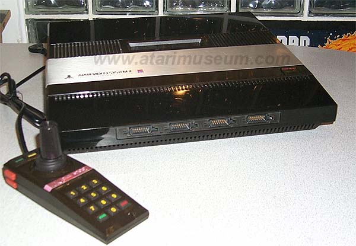
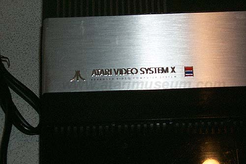
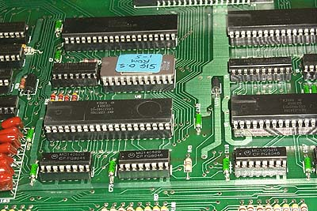
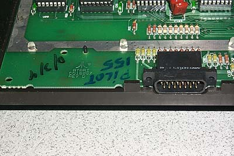
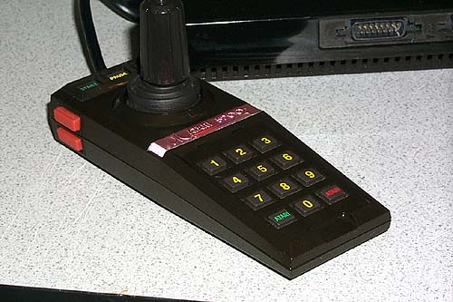

Before Atari could decide
on the name of the Atari 5200 SuperSystem, they were showing previews of
its new video game console and called it the "Atari Video System X".
Under Bushnell and then under Warner Communications, Atari codenamed many
of its projects. Codenames usually were designated by
the project leader and these codenames came from attractive women the engineers
liked, some were their wifes names and one project was even codenamed after
a bicycle! The Atari 2600 was named STELLA, the Atari 400 was
CANDY, the Atari 800 was COLLEEN and the new Atari 5200 was named PAM,
later Atari projects would be: Atari 2800 (Codenamed Cindy), Atari 600XL
(Codenamed Shirley), Atari 2600jr (Codenamed Bonnie) and many many others.

The interesting part about the name PAM for the Video System X was that Atari was considering actually calling it the Atari P.A.M. which stood for Atari Personal Arcade Machine. However the Atari VCS was renamed after its model # which was 2600, so the VCS became the Atari 2600 and the new Atari Video System X (VSX) was finally named the Atari 5200 to designate that it was twice the power of the 2600. Atari then came up with a new color-coding system to help its customers easily find games for the 2600 and games for the 5200. Gone went the colored boxes and in came the silver boxes with Red stripes for the Atari 2600 and silver boxes with Blue stripes for the 5200. (Atari Corp several years later claimed it came up with a revolutionary color coding system: Red for the XE's and Blue for the ST's, gee I wonder where they came up with that idea?)

System X BootROM (SIG O.S. ROM 1-5)
Originally Atari's VSX Video System X was
showing its new game cartridges in a sort of brown box with red and blue
stripes along the top of each game image. Games such as Asteroids,
Adventure, Skiing, and Tank Battle which never made it to market.
It should be noted that Atari has listed Asteroids as game CX-5201.
Its believed that Atari may have canned 5200 Asteroids since there would
have been no way to properly play the game with the non-centering analog
joysticks which would have caused all sorts of control problems with the
ship. After trying out the prototype of PAM Asteroids, the
theory is correct, control is difficult and annoying at times and makes
the game less then enjoyable.

Markings indicate Pilot 155.
Does this mean there could've been as many as 155 or more Atari System
X
Pilot Prototypes out there?
Its quite possible. To Date, Only this unit and another one
owned by a
European Collector are known to Exist.

Atari 5200 Sales Promotional photo controller.
None of the production controllers ever
had a Keypad that had ATARI on it, instead
a standard telco layout of numbers and * and #
were on the keypads. The only
place these controllers were ever used were in promotional
sales photo's and brochures.